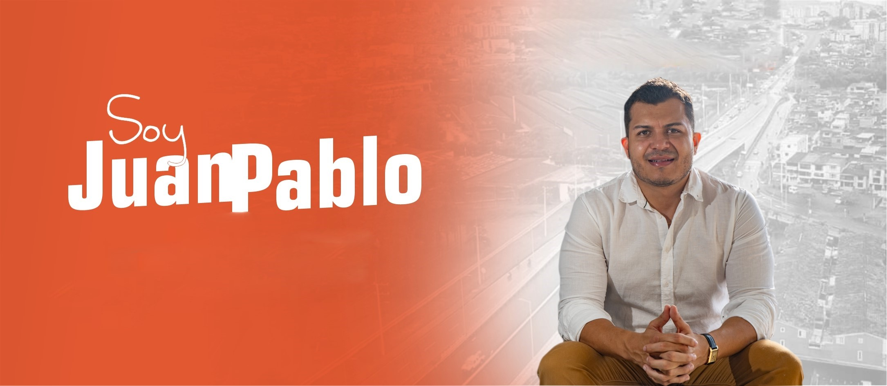

Aspirante a la alcaldia de Dosquebradas, Abogado Titulado en la Universidad Andina de Pereira, con Especialización en Derecho administrativo de la Universidad Santo Tomas, Master en Perfiles Criminales de la Universidad de Carabobo, Diplomado en Secop II (Legis).
Cuento con la experiencia de haber trabajado en diferentes entidades del sector público y del sector privado, en Dosquebradas, Risaralda las cuales me han forjado el amor y el respeto por diversas causas sociales, siempre propendiendo el equilibrio justo en cada escenario y reto de vida propuesto.
De otro punto y no menos importante, he tenido la oportunidad de trabajar como docente catedrático en la Universidad Minuto de Dios, experiencia que me permitió crecer de la mano con mis alumnos del momento
y siempre aprender que todos tenemos cosas que aportar y es así como se construye una verdadera sociedad, entendiendo el significado de las necesidades y contextos sociales en los cuales vivimos.
Honestidad y palabra, de que el cambio es ahora, valor fundamental para verdaderamente preguntarnos ¿Y a dosquebradas cuando le toca?
En nuestra campaña la integridad es fundamental, para ser moralmente correctos
En esta campaña las personas son nuestro principal proyecto por eso necesitamos ponernos en el lugar de las personas que necesitan de nuestra ayuda
El principal valor de esta campaña, el que impulsara a Dosquebradas a un mejor mañana


HOY VISITAMOS A DOÑA MARÍA...que como miles de Dosquebradenses sufren de ser calificados injustificadamente y no pueden acceder a los programas del DPS (prosperidad social) y en el caso particular ni a la salud, por ser calificados extremadamente alto en su Sisben. Esperamos que nuestras acción pueda servir para mejorar su calidad de vida
💚💛 Hoy iniciamos un proceso de recolección de firmas aspirando a la alcaldía de Dosquebradas, un proyecto que nace del corazón de todos los Dosquebradenses que soñamos con cambiar la historia de nuestro municipio. 💙🧡
HOMBRE Y SEGUIMOS SIN PENSAR EN LA CIUDAD 😭.... Le estamos perdiendo hasta la dignidad de enterrar a nuestros muertos (los invito a ver el siguiente video y verán por qué). NO PODEMOS ACABAR CON EL COMERCIO QUE ES SIGNO DE PUJANZA, DE GENTE BERRACA QUE HA SALIDO ADELANTE EN NUESTRA SOCIEDAD.
{{item.caption}}